A Fallout New Vegas a 2077-es nukleáris csapásváltás (Great War) után 204 évvel játszódik, 2281-ben, a Mojave sivatagban, a mai napi Las Vegas környékén (mely a játékban a New Vegas nevet viseli). A játékos a Courier nevű karaktert irányítja, aki egy futár, és akit egy titokzatos támadás ér a játék elején. A területen a játék során egy hatalomért való harc zajlik. Nyugatról a New California Republic (NCR), keletről a Caesar's Legion, valamint New Vegas vezetője, Mr. House is fennhatóságot akar szerezni a területen. A játék során a játékos döntései befolyásolják, hogy ki kerül hatalomra a játék végére, és milyen sors vár a Mojave sivatag lakóira.
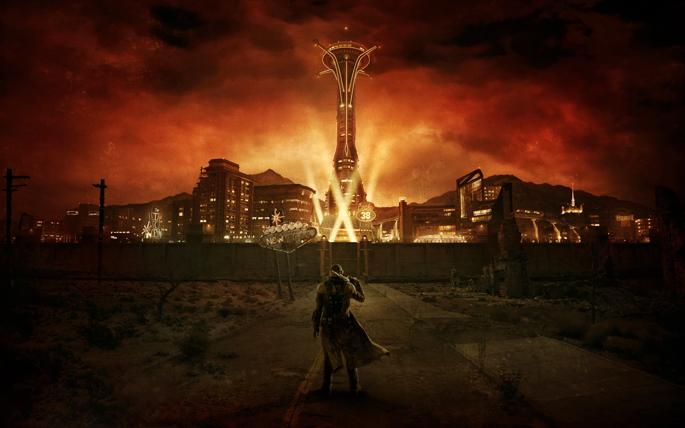
A játék elején, a bevezető film során a Courier-t egy támadás éri, melyben egy Benny nevű karakter fejbelövi és eltemeti a Goodsprings-i temetőben, ahonnan viszont egy Victor nevű robot kiássa. Az első fejezet arról szól, hogy a játékos megtalálja Benny-t és döntsön a sorsáról.
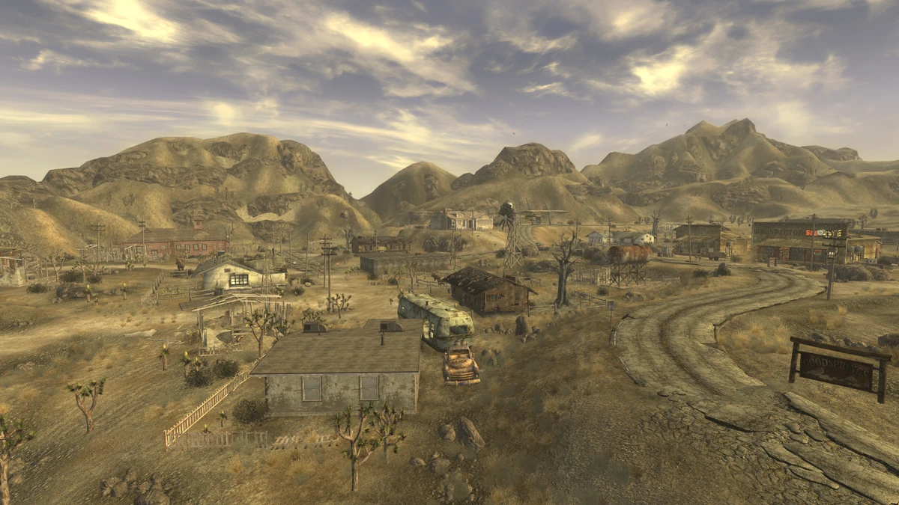
Goodsprings - Ain't That a Kick in the Head
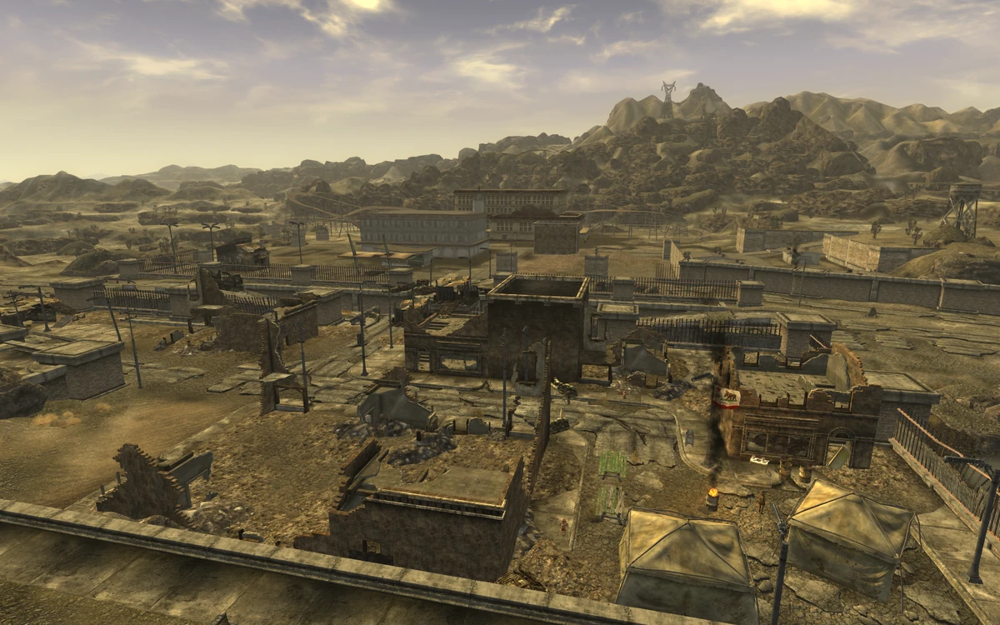
Primm - They Went That-a-Way
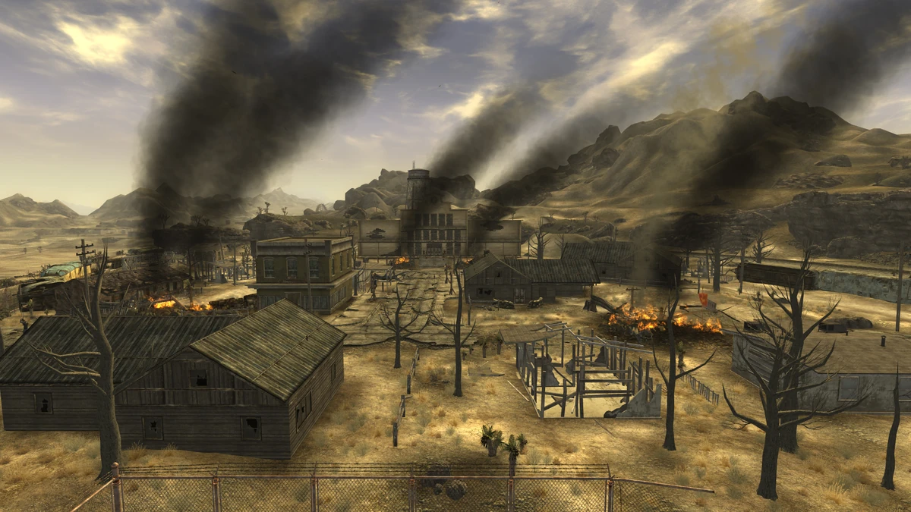
Nipton - They Went That-a-Way
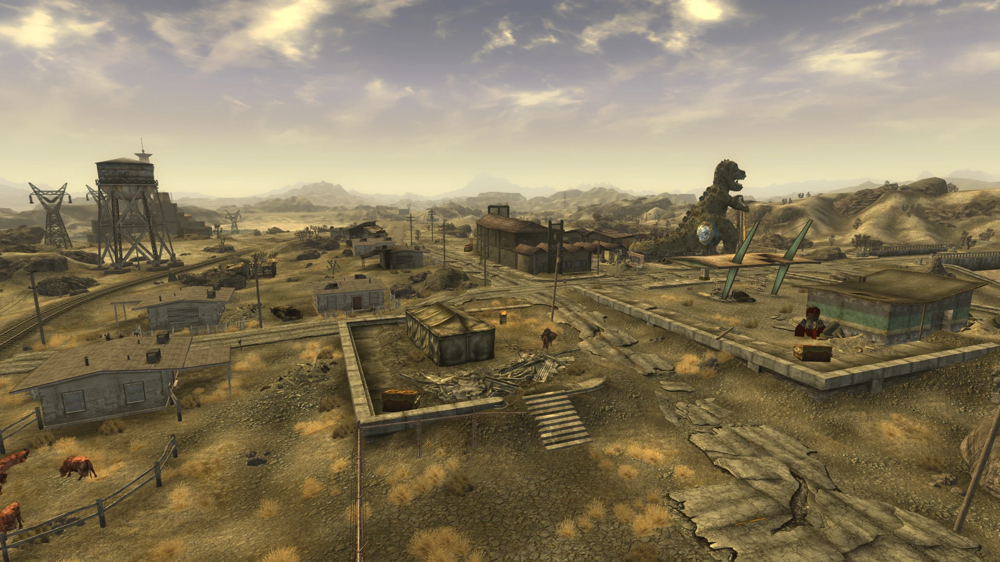
Novac - They Went That-a-Way
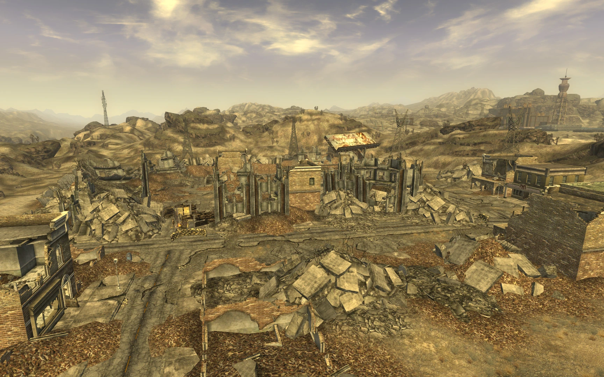
Boulder City - They Went That-a-Way
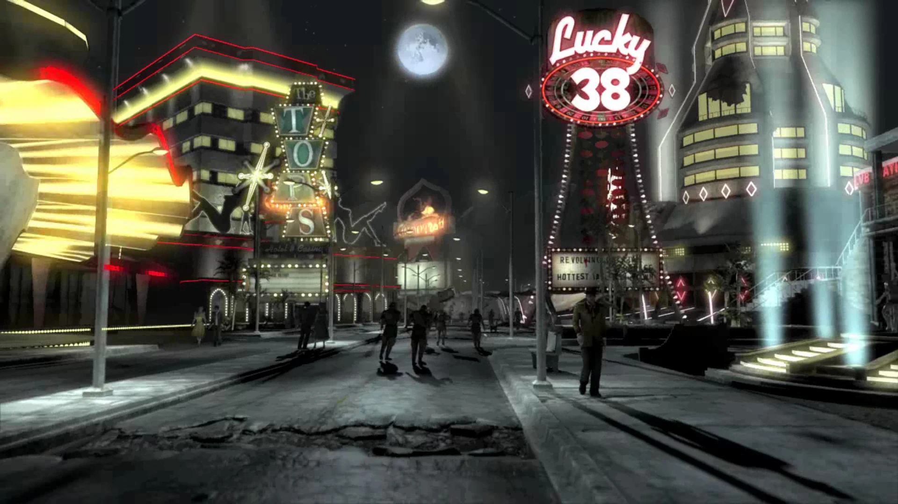
New Vegas - Ring-a-Ding-Ding!
A játék történetének második fejezete azután kezdődik, hogy a játékos megtalálta Benny-t és döntött a sorsáról. Ezután a területért harcoló csoportok mindegyike felkeresi a Courier-t, hogy igénybe vegye a segítségét. A játékosnak itt döntenie kell, hogy kinek az oldalán akarja tovább vinni a történetet, így a második fejezet menete nagyban függ ettől a dontéstől. A különböző történetvonalaknak vannak viszont közös pontjai is. Ebben a részben ezeket fogom röviden leírni.
Minden végigjátszás során a játékosnak a választott fő csoportjától függően különböző kisebb csoportokkal is kapcsolatba kell lépnie annak érdekében, hogy a segítségüket kérje a fő csoportok számára vagy elpusztítsa őket. Ezek a kisebb csoportok a következők:
A Boomerek egy elszigetelődési politikát folytató törzs, akik a Nellis Légierő Bázis területén élnek. Nagyrészt robbantó nehézfegyverzetet használnak. A játékosnak be kell jutnia a bázisukra, a bizalmukba kell férkőznie, majd vagy segítenie kell nekik, vagy minden tagjukat le kell mészárolnia. Ha a játékos segít nekik, akkor viszont az utolsó hozzájuk kapcsolódó küldetésben a Boomerek kihalásznak egy Boeing B-29 Superfortress nehézbombázót a Mead-tóból, és ezzel légitámogatást nyújtanak a játék fináléjában.
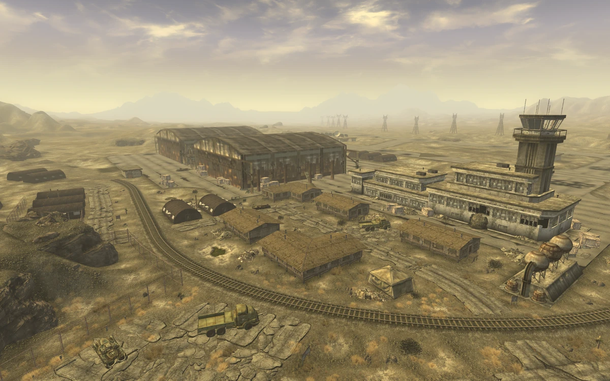
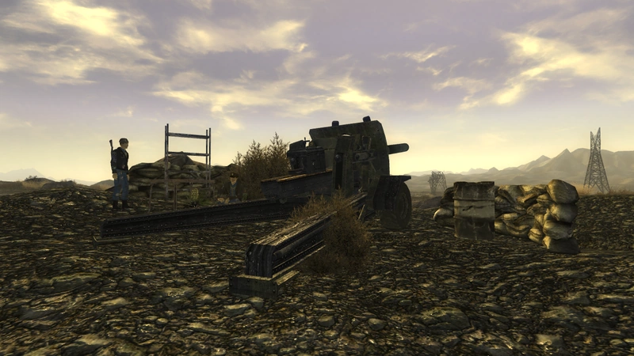
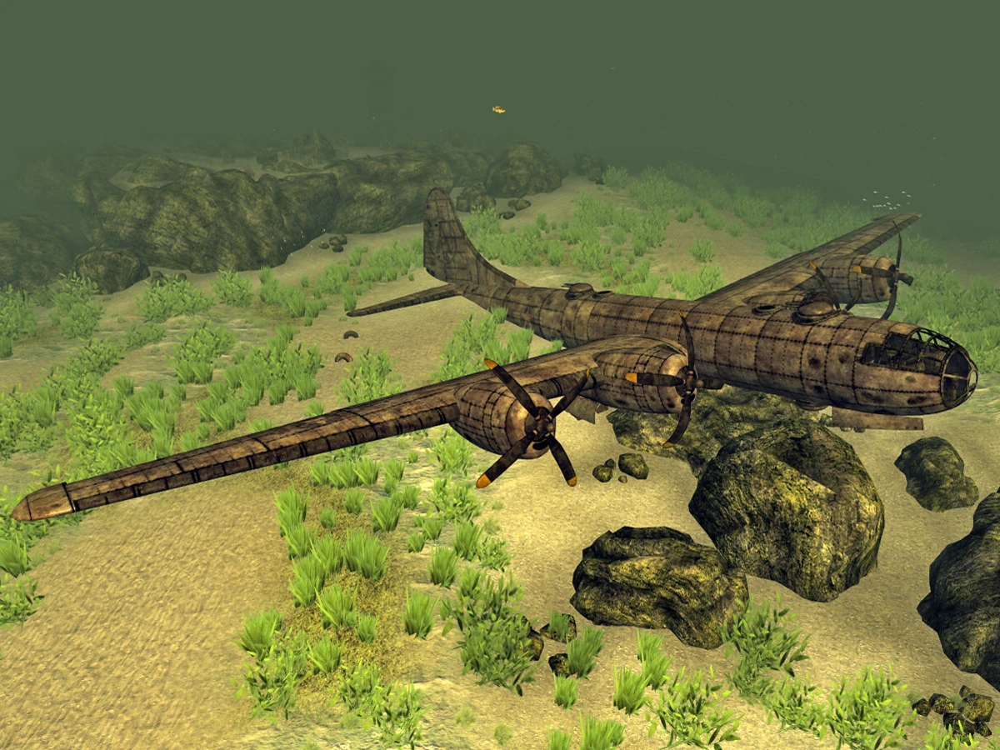
A Great Khans egy drogkereskedéssel foglalkozó törzs, akik a Mojave sivatag északnyugati részén, a Vörös Szikla Kanyonban (Red Rock Canyon) élnek. A játékos a választott csoportjától függően vagy kiírtja, száműzi őket, vagy beolvasztja őket egy bizonyos csoportba. Ha sikerül békés megoldást találni a Khanokkal, akkor harcosokként csatlakoznak a játékoshoz a fináléban, és segítenek a harcban. Ha viszont a játékos kiírtja őket, akkor a fináléban nem lesznek jelen.
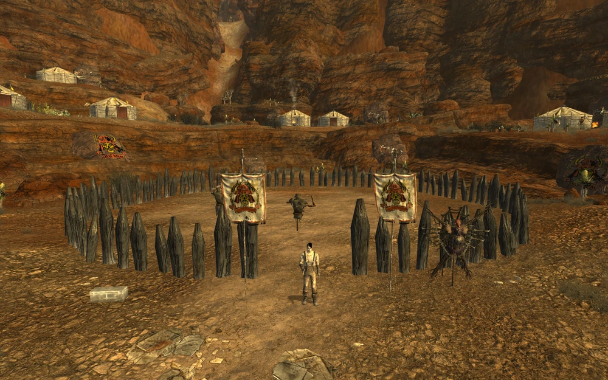
Az Omertas egy maffia jellegű csoport, akik a Gommorrah kaszinó tulajdonosai. A felszínen a csoport elég tisztának tűnik ha eltekintünk a kaszinóban és a kaszinó körüli területen zajló egyértelmű prostitúciótól, de Mr. House és az NCR orrai alatt fegyverkereskedelemmel és drogkereskedelemmel is foglalkoznak. A történetvonaluk során a játékosnak nyomoznia kell a fegyverkereskedelmi összeesküvésük után, majd döntést kell hozniuk ennek az üzletmodellnek a sorsáról. A játékos őket nem tudja teljesen kiírtani mint az előző kettőt, viszont meg tudják változtatni a vezetőségük felépítését.
Erről nincs kép, mivel az ilyestfajta dolgok nem alkalmasak iskolai megtekintésre.
A White Glove Society még egy New Vegas-i kaszinótulajdonos csoport, akik az Ultra-Luxe kaszinót működtetik. A felszínen ők is tisztának, talán egy picit szokatlannak tűnnek, viszont a felső vezetőség körében nagyon népszerű a kannibalizmus, a kannibál vacsorák. A játékos a történetvonaluk során eltörölheti a kannibál tendenciákat a kaszinóból, vagy elősegítheti ezeknek a vacsoráknak a tálalását friss célpontokkal. Ha a játékos maga egy kannibál, akkor speciális beszédopciókat is kapnak.
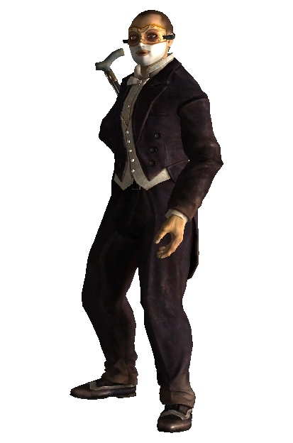
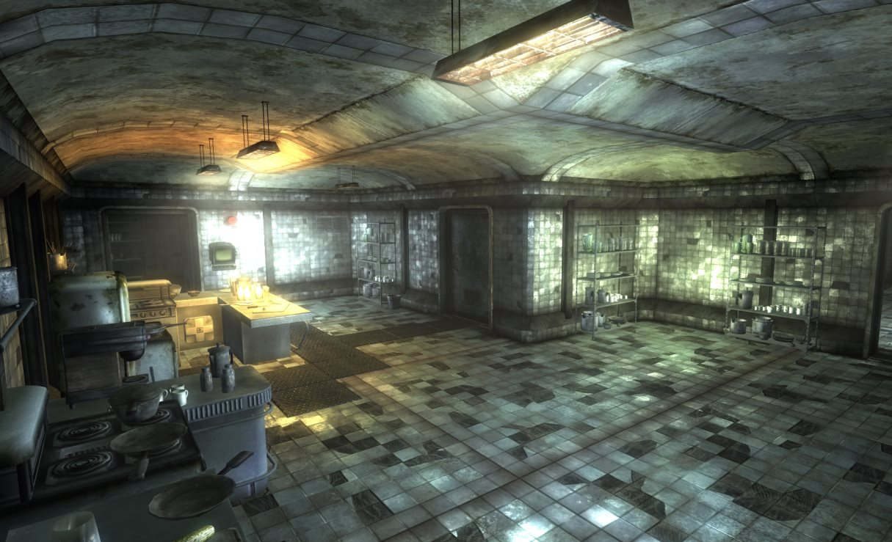
A Brotherhood of Steel egy technológiagyűjtő, elszigetelt csoport, akik a Rejtett Völgyben (Hidden Valley), egy bunkerben rejtőzködnek a rájuk vadászó NCR elől. Ők a legveszélyesebb kisebb csoport, mert a legtöbb katonájuk nehézpáncélt, Power Armour-t visel valamint fejlett fegyverzettel harcolnak. A játékosnak döntenie kell róla, hogy segít-e nekik kibékülni az NCR-rel és kijönni a bunkerből vagy megsemmisíti-e őket a bunker önmegsemmisító protokolljával.
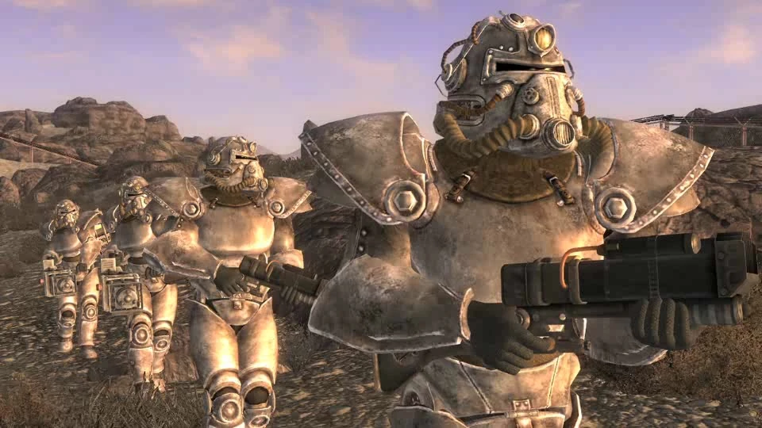
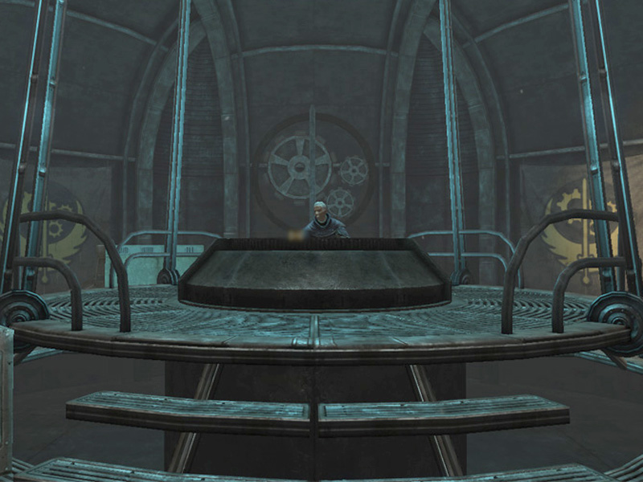
(Emlékeztető - NCR elnök küldetés, Hoover-gáti csata = Általános)